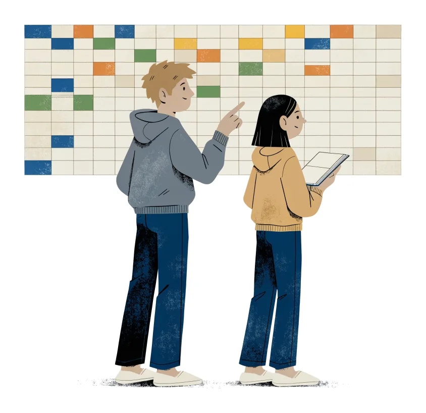
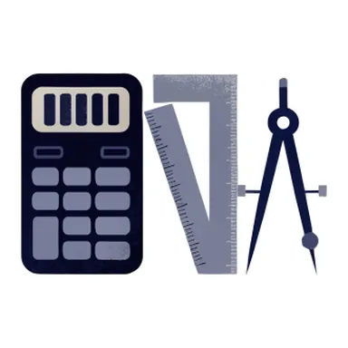
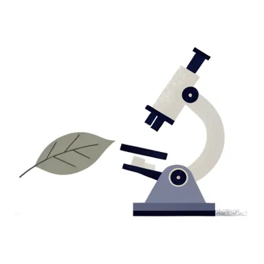
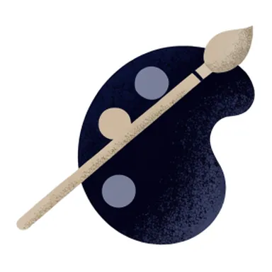
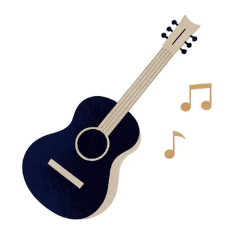
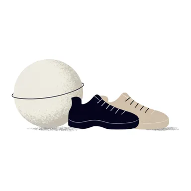
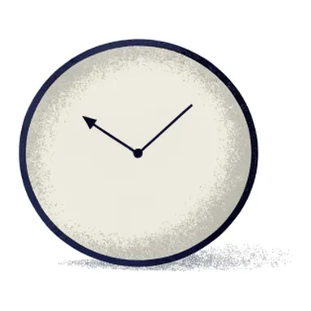

먼저 생각해 보세요.
독일 학교는 보통 몇 시쯤 첫 수업을 시작할까요?
독일 학교는 대개 8시쯤 시작해요. 그 대신 오후 1시나 2시쯤 끝나는 날이 많아요.

월요일 아침이에요. Yuna와 Lukas가 복도에 붙은 시간표에서 이번 주 수업을 확인해요.
눌러서 들어 보세요.
먼저 생각해 보세요.
독일 학교는 보통 몇 시쯤 첫 수업을 시작할까요?
독일 학교는 대개 8시쯤 시작해요. 그 대신 오후 1시나 2시쯤 끝나는 날이 많아요.
Lektion 3의 낱말 다섯 개를 다시 떠올려 보세요.
문법 haben, Verb auf Position 2, am Montag, um acht Uhr
이 과를 마치면 내 시간표와 좋아하는 과목을 독일어로 말할 수 있어요.
월요일 아침, 복도의 시간표 앞이에요.
들으면서 찾아보세요. 체육 수업은 몇 시에 있나요?
쉬는 시간이에요. 친구들이 과목 이야기를 해요.
들으면서 찾아보세요. Yuna가 가장 좋아하는 과목은 무엇인가요?
두 대화를 듣고 답하세요.
Heute ist Montag.
Die Klasse 8b hat am Montag Kunst.
미술(Kunst)은 수요일에 있어요.
Lukas findet Physik interessant.
Physik이 재미있다고 한 사람은 Emma예요. Lukas는 지루하다고 했어요.
체육 수업은 언제 있나요?
Yuna가 가장 좋아하는 과목은 무엇인가요?
쉬는 시간이 끝나면 무슨 수업이 있나요?
낱말 24개예요. 낱말이나 예문 앞의 단추를 누르면 소리가 나요. 명사는 der, die, das를 색으로 구분했어요.

Mathe 수학
Am Montag haben wir Mathe.월요일에는 수학이 있어요.
Deutsch 독일어
Deutsch ist schwer.독일어는 어려워요.
Englisch 영어
Wir haben jetzt Englisch.우리는 지금 영어 수업이에요.

Biologie 생물
Biologie finde ich interessant.생물은 재미있어요.
Physik 물리
Emma findet Physik interessant.Emma는 물리가 재미있다고 생각해요.
Geschichte 역사
Am Freitag haben wir Geschichte.금요일에는 역사가 있어요.

Kunst 미술
Kunst ist mein Lieblingsfach.미술은 내가 가장 좋아하는 과목이에요.

Musik 음악
Wir haben am Donnerstag Musik.음악은 목요일에 있어요.

Sport 체육, 운동
Wann haben wir Sport?체육은 언제 있어요?
Informatik 정보
Informatik ist leicht.정보는 쉬워요.
der Stundenplan, die Stundenpläne 시간표
Hier ist der Stundenplan.여기 시간표가 있어요.
die Stunde, die Stunden 수업 시간, 시간
Wir haben heute sechs Stunden.오늘은 수업이 여섯 시간 있어요.
die Pause, die Pausen 쉬는 시간
Wann ist Pause?쉬는 시간은 언제예요?
das Lieblingsfach, die Lieblingsfächer 가장 좋아하는 과목
Mein Lieblingsfach ist Musik.내가 가장 좋아하는 과목은 음악이에요.
haben 가지고 있다, (수업이) 있다
Ich habe heute Sport.나는 오늘 체육이 있어요.
finden ~라고 생각하다, 찾다
Wie findest du Mathe?수학은 어때?
heute 오늘
Heute ist Montag.오늘은 월요일이에요.
wann 언제
Wann haben wir Kunst?미술은 언제 있어요?

die Uhr, die Uhren 시계, ~시
Es ist acht Uhr.여덟 시예요.
schwer 어려운, 무거운
Ist Physik schwer?물리는 어려워요?
leicht 쉬운, 가벼운
Englisch ist leicht.영어는 쉬워요.
interessant 흥미로운, 재미있는
Ich finde Geschichte interessant.나는 역사가 재미있어요.
langweilig 지루한
Lukas findet Physik langweilig.Lukas는 물리가 지루하다고 생각해요.
toll 아주 좋은, 멋진
Musik finde ich toll.음악은 정말 좋아요.
이 과의 낱말로 여덟 문제를 풀어요.
월요일부터 일요일까지예요. 요일은 모두 der 명사이고, 첫 글자를 대문자로 써요. 독일 달력은 월요일에서 시작해요.
예문을 보고 답해 보세요.
er, sie와 함께 쓰는 haben의 모양은 무엇인가요?
규칙
haben은 du와 er, sie에서 b가 빠져요. 수업이 있다고 말할 때도 haben을 써요.
| haben | |
|---|---|
| ich | habe |
| du | hast |
| er, sie | hat |
| wir | haben |
주의 wir는 '우리'라는 뜻이에요. wir 다음의 동사는 haben, kommen, spielen처럼 사전에 나오는 모양 그대로예요. 5과에서 더 배워요.
예문을 보고 답해 보세요.
문장이 Am Montag으로 시작할 때 동사는 몇째 자리에 있나요?
규칙
독일어 평서문에서 동사는 언제나 둘째 자리에 와요. 요일이나 다른 말이 맨 앞에 오면 주어는 동사 뒤로 가요.
| 1 | 2 동사 | 나머지 |
|---|---|---|
| Wir | haben | am Montag Mathe. |
| Am Montag | haben | wir Mathe. |
| Mathe | finde | ich gut. |
주의 한국어는 순서를 바꿔도 동사가 문장 끝에 있지만, 독일어는 무엇이 앞에 오든 동사가 둘째 자리를 지켜요. Am Montag wir haben Mathe는 틀린 문장이에요.
예문을 보고 답해 보세요.
시각 앞에는 무엇을 쓰나요?
규칙
요일 앞에는 am, 시각 앞에는 um을 써요. 지금 몇 시인지 말할 때는 Es ist … Uhr라고 해요.
| 묻는 말 | 대답 |
|---|---|
| Wann haben wir Kunst? | Am Mittwoch. |
| Wann haben wir Sport? | Um elf Uhr. |
| Wie spät ist es? | Es ist zehn Uhr. |
주의 한 시는 Es ist ein Uhr예요. eins Uhr라고 하지 않아요.
듣고 알맞은 답을 고르세요.
체육 수업은 몇 시에 있나요?
Um elf Uhr haben wir Sport.
지금은 몇 시인가요?
Es ist neun Uhr fünfzehn.
역사 수업은 무슨 요일에 있나요?
Am Freitag haben wir Geschichte.
Emma가 가장 좋아하는 과목은 무엇인가요?
Mein Lieblingsfach ist Biologie.
8b의 시간표를 보고 답하세요.
Stundenplan 8b
| Montag | Dienstag | Mittwoch | |
|---|---|---|---|
| 8 Uhr | Mathe | Englisch | Deutsch |
| 9 Uhr | Deutsch | Biologie | Kunst |
| 10 Uhr | Pause | Pause | Pause |
| 11 Uhr | Sport | Geschichte | Musik |
Am Montag um acht Uhr hat die Klasse Mathe.
Am Dienstag hat die Klasse Sport.
체육(Sport)은 월요일 11시에 있어요.
Wann hat die Klasse Musik?
Was hat die Klasse am Dienstag um neun Uhr?
haben의 알맞은 형태를 고르세요.
Ich heute Mathe.
du auch Musik?
Lukas am Mittwoch Kunst.
Wir jetzt Englisch.
Yuna heute Sport.
am과 um 가운데 알맞은 말을 고르세요.
Wir haben Montag Mathe.
Die Pause ist zehn Uhr.
Freitag haben wir Geschichte.
Sport haben wir elf Uhr.
낱말을 순서대로 눌러 문장을 만드세요. 동사를 둘째 자리에 놓아요.
월요일에 우리는 수학이 있어.
오늘 나는 체육이 있어.
열한 시에 우리는 음악이 있어.
수학은 좋아.
요일을 짝지으세요.
듣고 그대로 써 보세요.
Am Montag haben wir Mathe. 월요일에는 수학이 있어.
Wann haben wir Sport? 체육은 언제 있어?
Es ist zehn Uhr. 열 시야.
Was haben wir heute? 오늘은 무슨 수업이 있어?
Am Montag haben wir … 월요일에는 … 수업이 있어.
Wann haben wir …? … 수업은 언제 있어?
Wie findest du …? …은 어때?
… finde ich gut. / … finde ich langweilig. …은 좋아. / …은 지루해.
Mein Lieblingsfach ist … 내가 가장 좋아하는 과목은 …야.
Wie spät ist es? 지금 몇 시야?
Es ist … Uhr. …시야.
Um … Uhr. …시에.
대화 B에서 역할을 하나 고르세요. 상대의 말은 음성으로 나오고, 내 차례에는 직접 말해요.
요일 하나를 고르고, 그날 있는 과목 두 개와 가장 좋아하는 과목을 독일어로 적으세요. 완성된 문장을 소리 내어 읽어 보세요.
Am Montag habe ich Mathe und Englisch.
Mein Lieblingsfach ist Musik.
Musik finde ich toll.
Mein Stundenplan
독일 친구에게 내 시간표를 알려 주는 글을 써 보세요. 네다섯 문장이면 충분해요.
Am Montag habe ich Mathe, Englisch und Sport. Um neun Uhr habe ich Mathe. Mein Lieblingsfach ist Sport. Mathe finde ich schwer. Am Dienstag habe ich Musik.
다 쓴 뒤에 확인해 보세요.
Ich kann meinen Stundenplan beschreiben.내 시간표를 말할 수 있어요.
Ich kann sagen, wie ich ein Fach finde.과목이 어떤지 말할 수 있어요.
Ich kann nach der Uhrzeit fragen.시각을 묻고 말할 수 있어요.